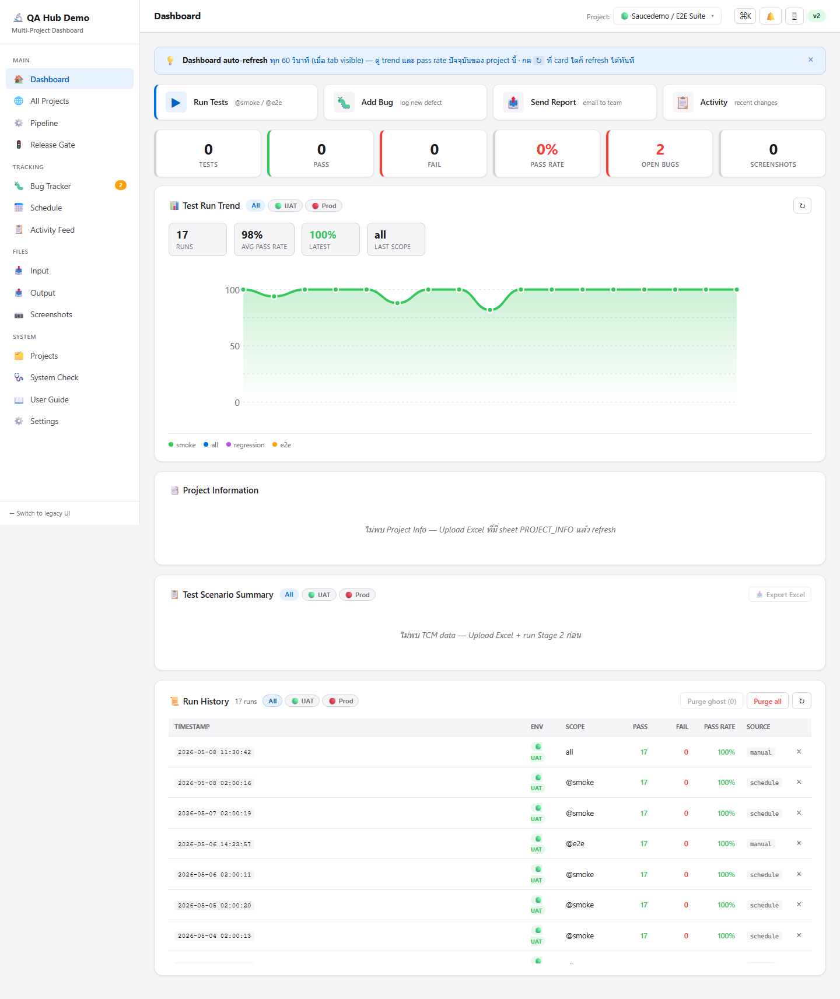
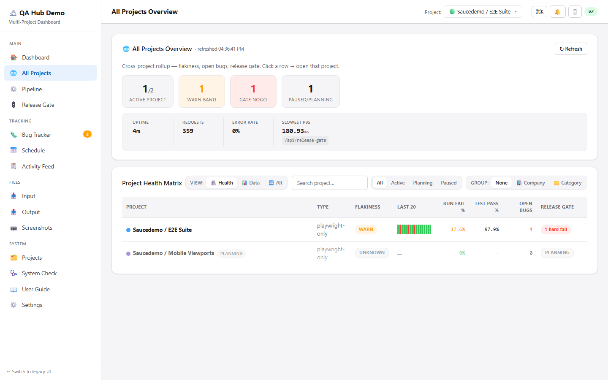
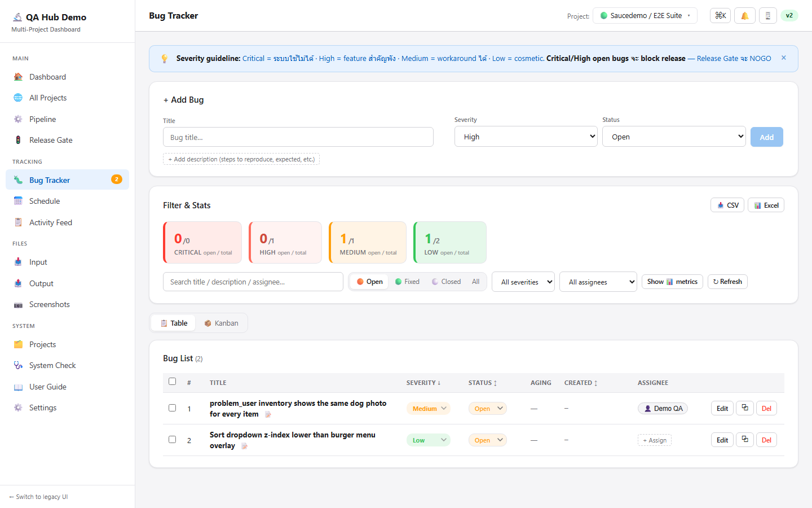
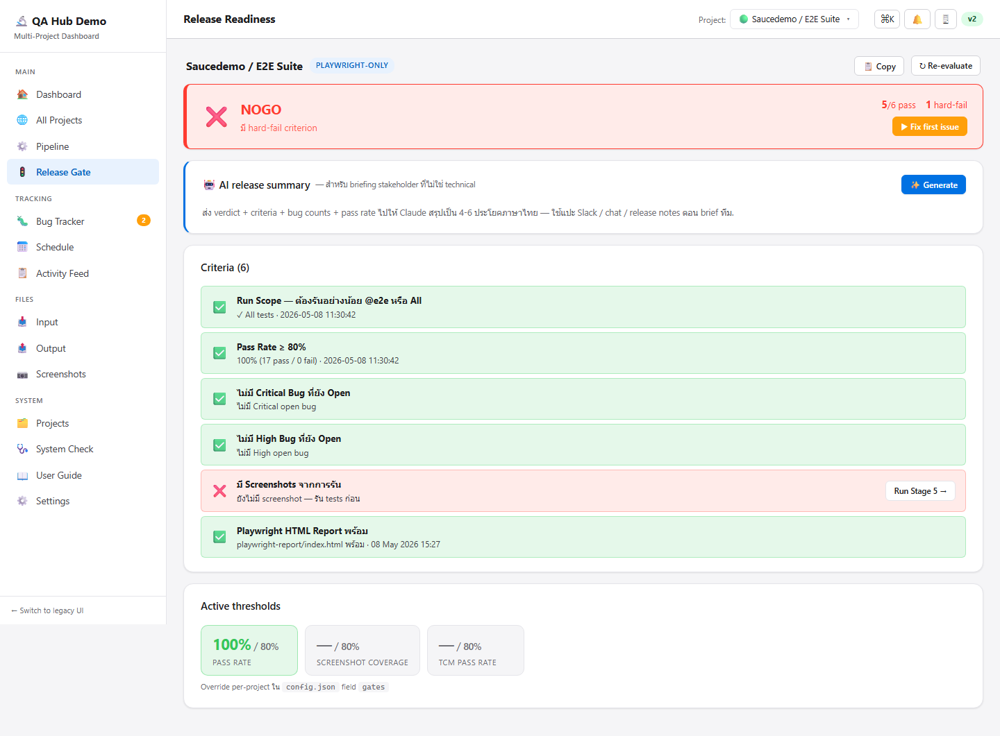
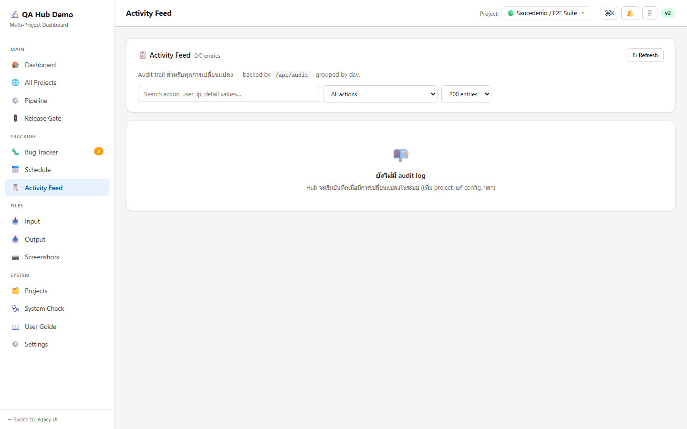
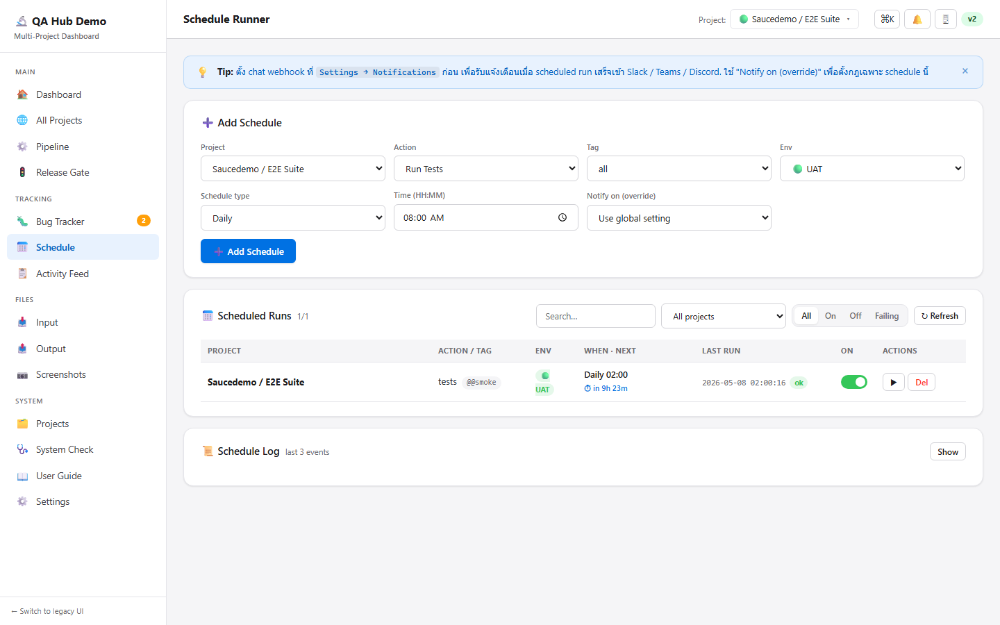
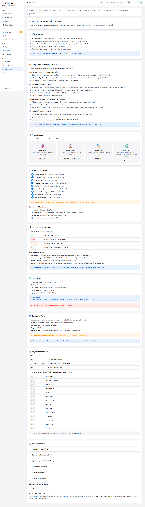

Hub UI v2
Strangler-fig migration — vanilla JS dashboard → Vue 3 SPA
Mounted at /v2/ · same Flask backend, zero downtime
Why migrate at all?
Legacy templates/dashboard.html — vanilla HTML/JS/CSS, ~3k LOC, growing pains
{{ c.n }} {{ c.t }}
Strategy — strangler-fig
ใหม่อยู่ข้างเก่า ค่อยๆ แทน — ไม่ต้อง freeze, ไม่ต้อง big-bang rewrite
Browser
|
+---------------------------------------+
| |
/ (legacy) /v2/ (Vue 3)
templates/dashboard.html hub/static/dist/index.html
~3k LOC vanilla JS ~187 modules, 360 KB gzipped
| |
+-------------- fetch /api/* -----------+
|
Flask app.py
(single backend)
Cutover plan: feature-flag per route → default to v2 once at parity
→ keep legacy as fallback → eventually remove templates/
Stack choices
{{ s.n }} {{ s.t }}
เลือก Vue 3 composition API + <script setup> +
Pinia เพราะ DX ดีกว่า Vuex และ migration story ตรงไปตรงมาที่สุด
Dashboard /v2/dashboard
Stats row + trend chart + run history table — โครงเดียวกันกับ legacy แต่ component-driven

All Projects Overview v2 only
Cross-project rollup — flakiness, run-fail %, test-pass %, open bugs, release gate ในแถวเดียว

Bug Tracker /v2/bugs
Severity guideline บนหัว · Table/Kanban toggle · CSV/Excel export · assignee + aging

Release Gate + AI summary
Verdict + 6 criteria + AI release summary: ส่ง verdict ไปให้ Claude สรุปเป็นไทยให้ stakeholder

Activity Feed v2 only
Single timeline — runs, bug changes, schedule fires, config updates — รวมในหน้าเดียว

Schedule · User Guide
Daily route + cycle เขียนเป็น component — edit เปิด PR ทันที ไม่ต้อง deploy


Migration scorecard
15 routes shipped · v2 มี feature ที่ legacy ไม่เคยมี 4 อย่าง (NEW)
Vue 3 patterns used
Composition API + Pinia stores + <script setup> — ทุก component
// stores/projects.ts — Pinia store, persisted to localStorage export const useProjectsStore = defineStore("projects", () => { const active = ref<Project | null>(null); const all = ref<Project[]>([]); async function refresh() { all.value = await api.get<Project[]>("/api/projects"); } function switchTo(p: Project) { active.value = p; localStorage.setItem("fp_project", JSON.stringify(p)); } return { active, all, refresh, switchTo }; }); // views/DashboardView.vue — consumes the store reactively <script setup lang="ts"> const projects = useProjectsStore(); const runs = computed(() => filterByProject(history.value, projects.active)); </script>
Why Vue 3 — not React?
{{ r.n }} {{ r.t }}
React จะ valid เหมือนกัน — เลือก Vue เพราะ team เคยใช้ + migration cost ต่ำ + DX สำหรับ small team
15 / 15 routes shipped
Legacy still online as fallback · cutover when feature-flag flips
next Cutover
Default new users to /v2/, keep legacy 1 release as fallback, remove templates/dashboard.html
next i18n
vue-i18n plug-in — แยก Thai/English copy ออกจาก template
./setup.ps1 → http://localhost:8080/v2/